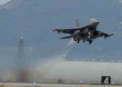
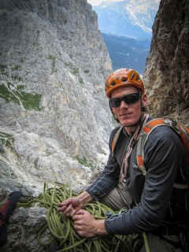

January 2013
| I want to save some of the newspaper articles
that were written about our friend Luc. In the past I've pasted
links but eventually those links get changed and I lose the record of what
was said. I don't want to lose anything I have that connects me to
Luc. Even reading about these awful events is something I want to
hang on to. |
|||
|
http://www.stripes.com/news/us/air-force-pilot-missing-off-italy-coast-is-from-california-1.205735
Air Force
pilot missing off Italy coast is from California
Published:
January 29, 2013  An
F-16 Fighting Falcon takes off from Aviano Air Base in this file photograph.
An aircraft similar to this went missing Jan. 28, 2013, over the Adriatic Sea. U.S. Air Force TWAIN HARTE, Calif. � An Air Force pilot
reported missing Monday night when his F-16 fighter jet disappeared over the
Adriatic Sea off the Italian coast is from Tuolumne County, Calif.Search teams
recovered debris Tuesday believed to be from the F-16 Fighting Falcon.
Rescuers continued to search for the pilot, Capt. Lucas �Luc� Gruenther,
who grew up in Twain Harte and is a 1999 graduate of Summerville High in
Tuolumne. His wife, Cassy, is expecting their first child in
a few weeks. The Gruenthers were high school sweethearts at Summerville. Twain Harte resident Chance Hildreth, one of
Gruenther�s brothers, said family and friends have been praying for his safe
return. Hildreth asked community members to keep Gruenther in their prayers as
well. Family members learned Monday that Gruenther, 32,
was missing. �I thought, �They will find him,� � said
Gruenther�s father-in-law, Randy Williams of Tuolumne. �But we haven�t
heard anything.� Williams said his wife and Gruenther�s mother
are on their way to Italy to be with Cassy Gruenther. He said he last saw his
daughter and son-in-law over Thanksgiving when they were home for about three
weeks. Gruenther was a standout athlete, leader and
student at Summerville who played varsity soccer, was involved in more than a
half-dozen campus clubs and served as student body president. �He had the personality � �I�m going to
make this a better place,� � said Mitch Heldstab, Gruenther�s
grade-level coordinator at Summerville. �When he believed in something, he
went after it.� Heldstab said Gruenther and the student body vice
president were so successful in tackling the campus� litter problem that the
state fire marshal used Summerville as an example of keeping high schools free
of trash. Gruenther came back to Summerville in April to
give two presentations to students. Heldstab said Gruenther comes from an athletic
family and that one of his grandfathers is Olympic champion Bob Mathias, who
won the gold medal in the decathlon in 1948 and 1952. Gruenther is an Air Force Academy distinguished
graduate. He is the 31st Fighter Wing�s chief of flight safety at the Aviano
Air Base in Italy. He was performing a training mission when the base lost
contact with him about 8 p.m. Monday, according to an air base news release. U.S. military officials are coordinating search
and rescue efforts with Italian military and civilian teams. U.S. military
resources joined the search including an Air Force HC-130 from U.S. Africa
Command and a rotation of Navy P-3s from U.S. Naval Forces Europe. �We are dedicating all available resources to
the search and rescue operation,� said Brig. Gen Scott J. Zobrist, 31st
Fighter Wing commander. �I�m grateful to the many Italian and U.S.
professionals who are executing this mission. I am hopeful that we will bring
him home safely. �Our thoughts and prayers are with Capt.
Gruenther and his family. I personally appreciate the efforts of the many
people who are supporting the Gruenthers in this difficult time.� http://www.stripes.com/body-of-missing-aviano-f-16-pilot-found-in-adriatic-sea-1.205953
Body of
missing Aviano F-16 pilot found in Adriatic Sea
Published:
January 31, 2013
 �It is with great sadness that we announce that
the body of Captain Lucas Gruenther was found in the Adriatic Sea this
afternoon,� the family's statement said. Gruenther and his F-16 Fighting Falcon went
missing about 8 p.m. Monday roughly 150 miles south of Aviano. A massive
search effort ensued, including Italian coast guard and navy ships, fishing
vessels and an assortment of planes, including other F-16s from the wing. Italian news site Romagna Noi reported
Gruenther�s body was found around 2 p.m. about 15 miles off the coast of
Pesaro, where it was recovered by an Italian coast guard patrol boat. According to Romagna Noi, Gruenther was wearing
his flight suit, but a family member had to officially identify the body
before news of the discovery could be released. In its statement, the family gave thanks for the
outpouring of support it received over the nearly four days since Gruenther
went missing. �We especially want to extend our deepest
gratitude to the many people who volunteered their time and resources to help
bring Luc home,� the statement said. "Captain Gruenther was an outstanding officer
who epitomized what it means to be an Airman," Brig. Gen. Scott J.
Zobrist, 31st Fighter Wing commander, said in a news release issued Thursday
evening. "He was not only a first-rate pilot; he was an exceptional
leader whose presence will be sorely missed. "Our thoughts and prayers are with the
Gruenther family during this difficult time. Words cannot adequately express
how sorry we are for your loss." Earlier, the family released a statement
indicating searchers recovered Gruenther�s helmet, which was reportedly in
good condition, and his drogue parachute, a sign that he�d ejected. That statement expressed optimism that the
32-year-old pilot would be found alive. Cassy Gruenther, who is weeks away
from giving birth to the couple�s first child, said in that statement her
husband �� is a self-reliant outdoorsman who would sleep every night under
the stars if he could. He�s a skydiver, he�s a rock climber and he�s a
certified scuba diver. He is a health nut and in great shape.� Thursday�s much shorter message called Gruenther,
�A compassionate husband, a loving son, and a devoted brother� who
�leaves behind a family who loves him dearly and a legacy of achievement.� �We will never fully recover from our loss, but
take heart in the knowledge that during his all-too-short time in this world,
he made a significant difference in the lives of all whom he met.� Gruenther, chief of flight safety for the wing,
lost contact with the base and the rest of his formation as they flew Monday
night over the Adriatic. Italian personnel found debris believed to be from
his jet Tuesday. The pilot�s grandfather, Army Gen. Alfred
Gruenther, served as supreme allied commander Europe from 1953 to 1956. His
brother, Alexander Gruenther, is also an Air Force captain, stationed in
Brussels, according to a local newspaper. �Luc has wanted to be a pilot since he was a
little boy,� his mother, Romel Mathias, was quoted as saying in the earlier
family statement. �And he did everything he had to get there. That�s what
he does with everything in his life. If he wants to do something, he finds a
way to do it.� Cassy Gruenther said her husband picked up Italian
quickly and the couple has been leading the Maniago chapter of the Vicini
Americani, a program started by the base and Italian communities to foster
friendship and cooperation. �He served six months in Afghanistan, where his
mission was to support ground troops,� Mathias said. �We remember Luc
saying that the greatest day on deployment was when he got to meet the
soldiers he supported with air cover during an operation.� Stars and Stripes� Sandra Jontz contributed to
this report. http://www.aviano.af.mil/news/story.asp?id=123335298
1,000
supporters pay respects during memorial service for fallen pilot
2/6/2013
- AVIANO
AIR BASE, Italy --
Service members, civilians, family and friends honored the life and memory of
a U.S. Air Force Academy graduate and combat veteran during a memorial service
today at Aviano Air Base. |
|||
{kind=link}